A specialist in restoring old and antique wooden furniture to its former glory.
Kaja can refinish tables, desks, sideboards, cabinets and chairs with damage, scratches and watermarks to their original state and add increased value to your furniture through a series of traditional and modern furniture restoration techniques.
Over 10 years she has built up an amazing list of clients that including private collectors, major companies, hotels and embassies.
We work with modern and antique furniture, large or small by:
Repairing damage to wood and moving parts such as drawer runners
Carving and wood turning
Matching veneers and colours
Cane and rush seating
Reviving colour and finish retaining patination
Examples of Work
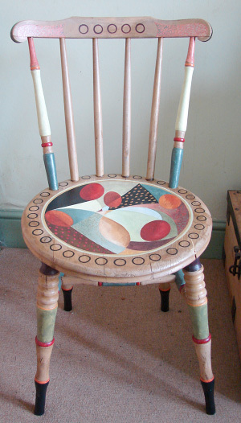
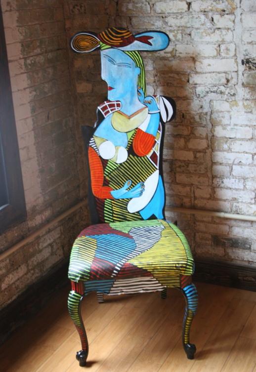
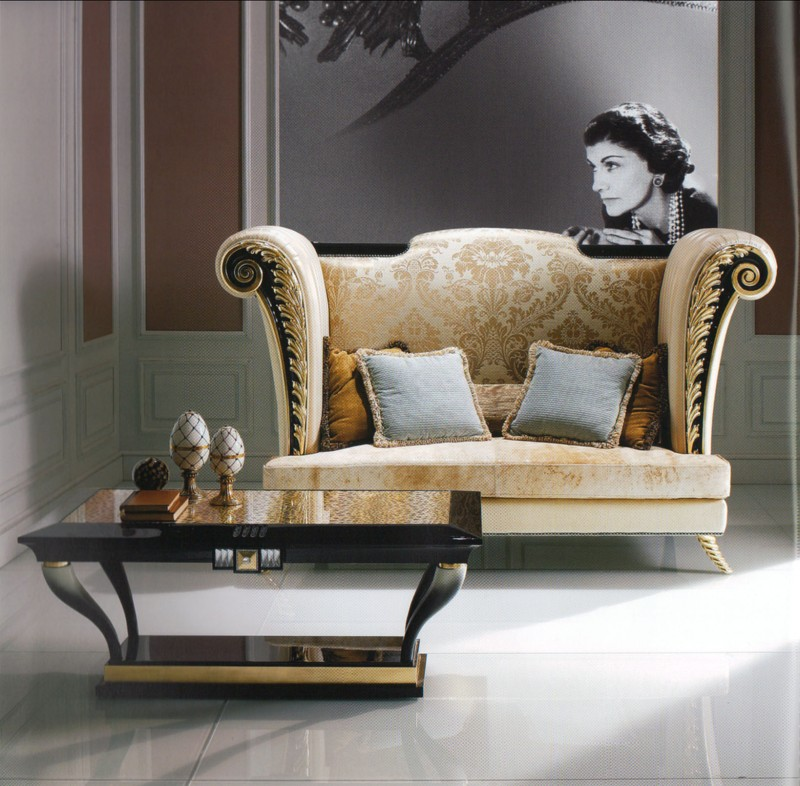
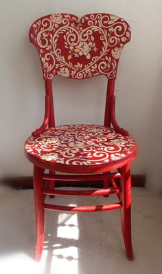
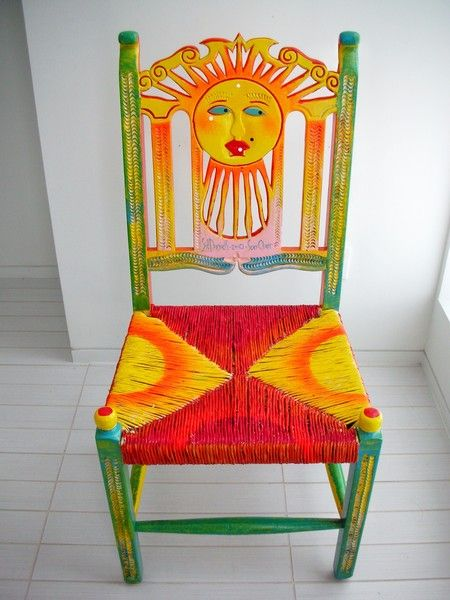
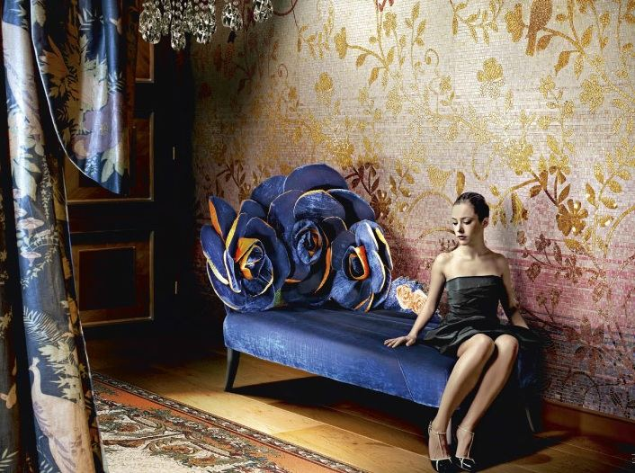
Kew Bridge, London
because making things with ♥ never goes out of style

 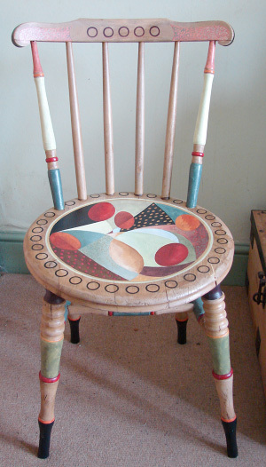
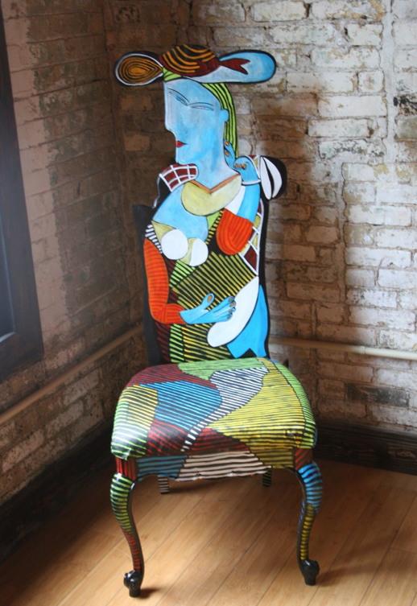
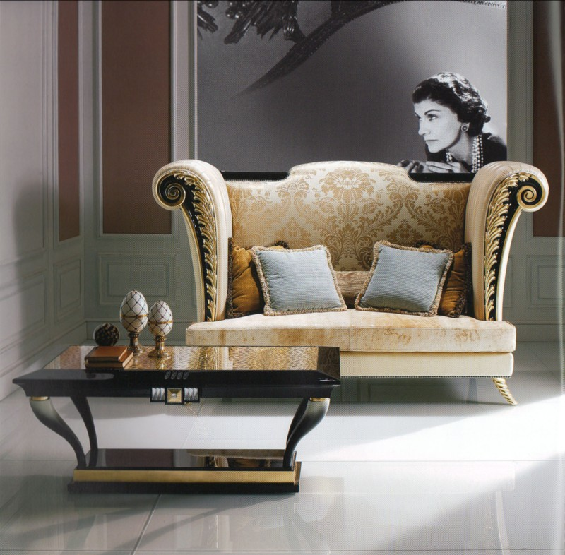
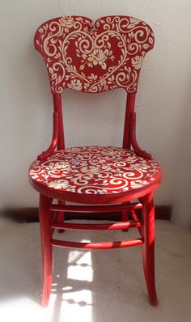
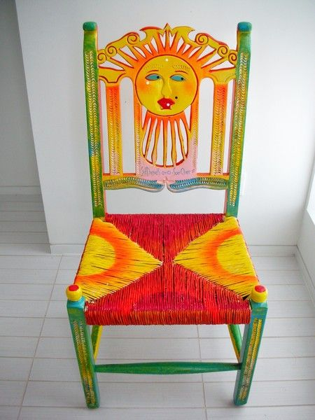
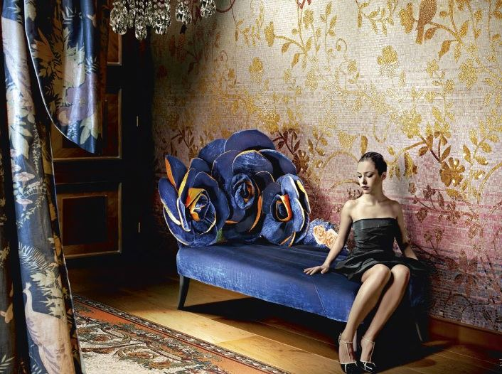
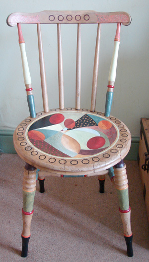
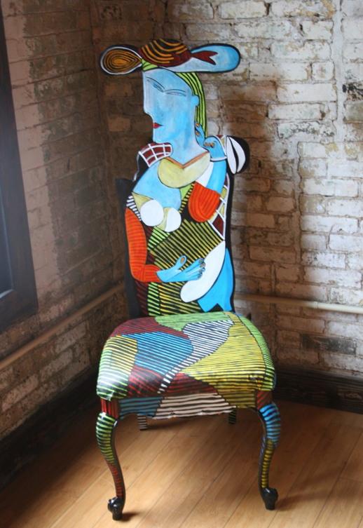
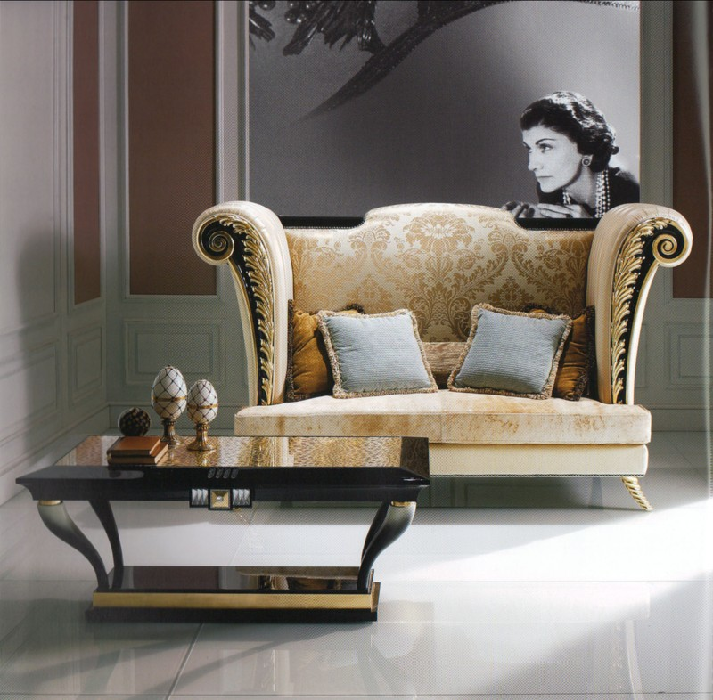
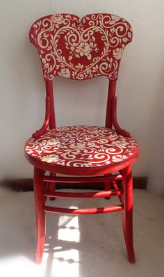
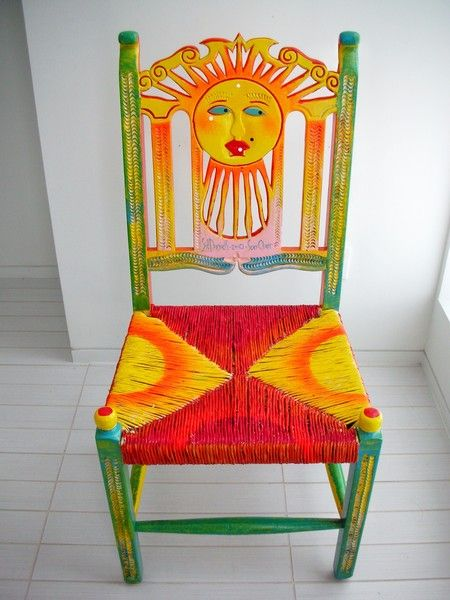
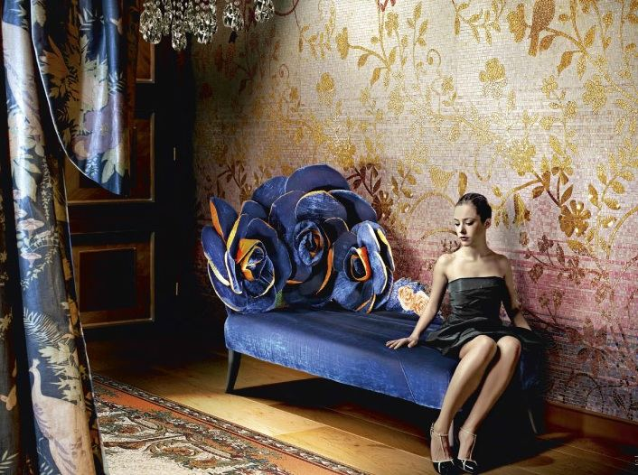